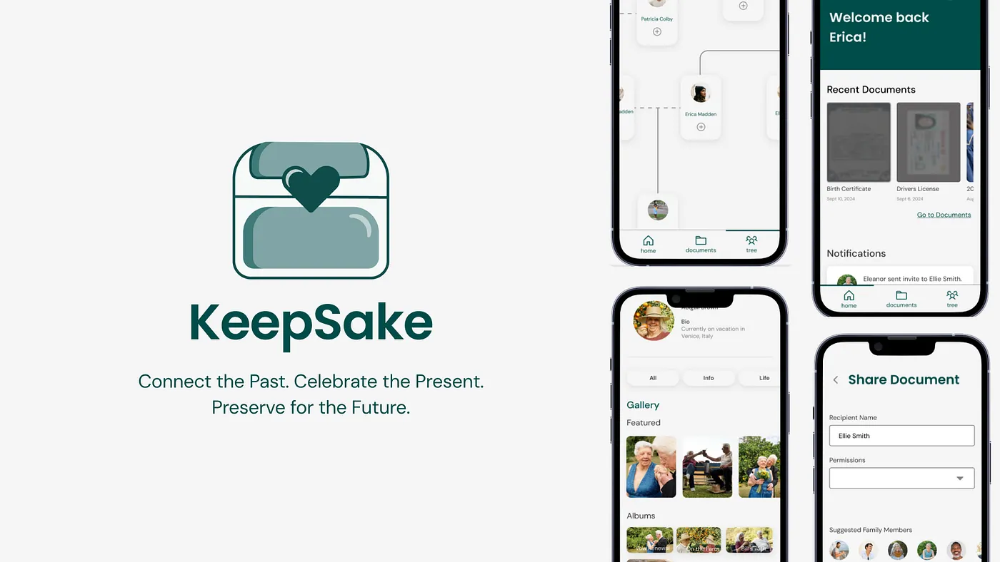
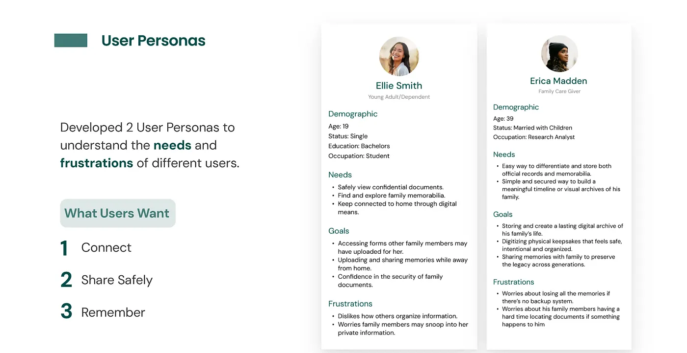

KeepSake
A secure family archive designed to hold both high-stakes records and the stories people actually want to pass down.


Overview
Families already store critical information somewhere, but it is usually split across paper folders, cloud drives, text threads, and the memory of one responsible person. That makes it hard to find documents when they matter, and even harder to preserve stories, recipes, photos, and health context across generations.
We designed KeepSake as a shared family archive that treats documents and memories as part of the same system. The concept combined secure storage, permission-based sharing, family profiles, and legacy planning in one place.
The Core Problem
Traditional ways of sharing family knowledge are fragmented, insecure, or inaccessible to the people who need them most. Important files may live in one folder, while personal history lives in photos, recipes, or stories that never make it into a system at all.
We started with a question about secure records, but our research revealed a more human one: how might families preserve information that is both practical and meaningful?
Sprint Structure
This was a six-week student-led design sprint with clear ownership by week, which made it easier to move quickly while still handing off work between research, synthesis, testing, and visual refinement.
Research
Surveys, interviews, and competitive analysis established the initial problem space around document management.
Synthesis
I led affinity mapping, information architecture, and low-fidelity exploration to define what the product should actually be.
Mid-Fi + Testing
The team turned the structure into prototype flows and pressure-tested clarity, security, and navigation with users.
Hi-Fi Refinement
We finalized design systems, polished the product language, and integrated usability feedback into the final concept.
Research That Changed the Product
Our original framing leaned heavily toward storing high-stakes documents. That stayed important, but the stronger signal from research was emotional continuity. Users wanted a place for confidential forms and a place for family memorabilia, not two separate products.
Survey participants were cautious about uploading sensitive files online, but they became more open when multiple layers of security were present. Interview participants pushed the concept even further by describing a desire to preserve photos, recipes, timelines, and stories that could be passed down over time.
Key Research Goals
How people manage sensitive family files today, and where trust breaks down.
What would make people willing to use a digital archive instead of paper or ad hoc storage.
How to make the experience feel secure without making it overwhelming.
Main Insight
The opportunity was not just "store documents online." It was to create one system for records, memories, and legacy handoff. That shift gave the product both stronger utility and a more differentiated emotional reason to exist.
How We Synthesized the Problem
Affinity mapping helped us organize findings into themes like security, accessibility, habits, organization, and emotional value. That work made it easier to see where people were aligned and where the product needed to balance competing needs.
From there, I helped build the information architecture for five primary surfaces: onboarding, dashboard, documents, family tree, and profile settings. The goal was to create a product that felt coherent even though it was solving for both archival storage and family storytelling.
Product Direction and Key Flows
1. Secure onboarding
We prioritized trust early. The onboarding flow introduced identity verification, a four-digit access pin, and visible progress cues so the security model felt intentional rather than hidden.
2. Documents with permissions
Document upload and sharing focused on clarity. Users needed folder organization, permission controls, and confidence that the right file was reaching the right family member.
3. Family tree as archive
The family tree became more than genealogy. It was designed as a way to navigate profiles, timelines, photos, memorabilia, and health context through relationships.
4. Profile settings for control
Privacy, accessibility, legacy access, linked accounts, and security settings all lived in one place so users could feel ownership over what was shared and with whom.
Testing and Iteration
After mid-fidelity prototyping, the team ran two rounds of usability testing: one with five design students at UC Davis and one with two family members for more real-world perspective. We tested whether onboarding felt appropriate for the product, whether document sharing felt secure, whether family-tree navigation was understandable, and whether profile settings felt usable instead of intimidating.
The biggest takeaway was that users accepted stronger security when the logic was visible and the flow stayed clear. Trust did not come from simply adding more controls. It came from explaining the system and sequencing it in a way that felt understandable.
Final Concept
The high-fidelity concept leaned into a calm, minimal interface with green as the main accent to signal trust, stability, and continuity. The final design emphasized five connected interactions: onboarding, dashboard, documents, family tree, and profile settings.
Security mechanisms were made explicit to support trust around confidential files.
Users could choose who received access and what level of access they had.
The concept accounted for emergencies, caregivers, minors, and family administration.
The archive was designed to support both practical needs and generational storytelling.
Challenges
The hardest design tension was balancing security with ease of access. A meaningful family archive needs privacy controls, but it also has to be usable by people with different levels of technical confidence.
Another challenge was conceptual: we were effectively connecting two products, a secure document vault and a family-memory platform, into one experience. That required us to keep revisiting our how-might-we statements, user flows, and priorities as the concept evolved.
What I Took Away
This project reinforced how non-linear design work really is. The strongest version of the concept did not come from pushing forward on the original idea. It came from listening closely enough to pivot when the research revealed a deeper user need.
If we had more time, I would explore richer document-viewing experiences, more tailored micro-interactions for different artifact types like recipes and certificates, and a responsive mobile-to-desktop system that made family collaboration feel even more alive.
Back to selected work →